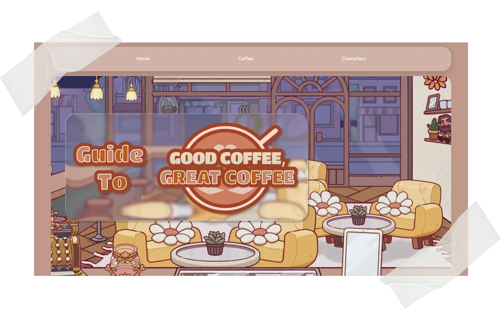
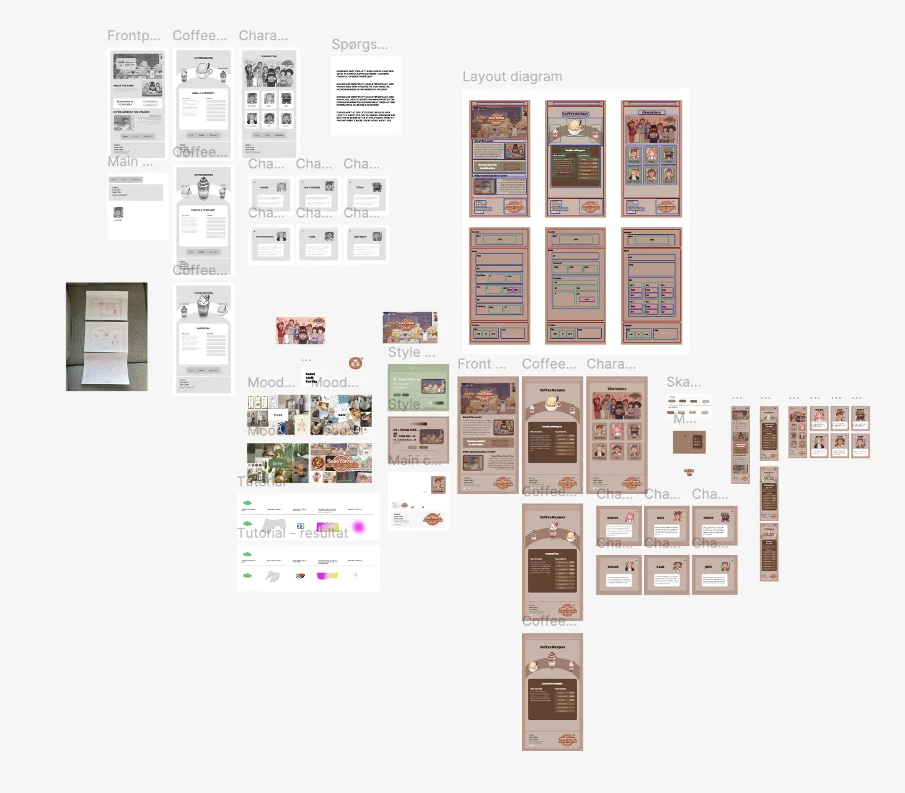

Tema 3 - Grundlæggende UX/UI
Good Coffee, Great Coffee
Tema Beskrivelse
Gennem dette tema har jeg lært, hvor vigtigt det er at forstå brugerne, og hvordan små designændringer kan gøre oplevelsen meget bedre. Mit arbejde har vist mig, at gode løsninger bygger på konkrete indsigter, ikke bare antagelser.
Opgave Beskrivelse
Under dette tema blev vi sat til at lave et emnesite. Dette skulle være ud fra et selvvalgt emne. Vi blev introduceret til forskellige test vi skulle lave på sitet, for at teste brugervenligheden på det for at have fokus på UX/UI.
Proces, løsning og resultat
Igennem min proces har jeg gået igennem flere forskellige faser. Disse faser har hjulpet mig hen til det endelige resultat af mit emnesite.
Først gik jeg igennem min research periode hvor jeg fandt ud af hvilket emne jeg ville lave mit emnesite omkring, hvor jeg valgte et spil der hedder Good Coffee, Great Coffee. Herefter researchede jeg blandt andet andre hjemmesider om spillet og målgruppen.
Efter det begyndte jeg på designprocessen, her har jeg skitseret, lavet low-fi og hi-fi prototyper, wireframes, samt meget mere. Dette er noget du kan finde i min Figma dokumentation som ligger linket på billedet.
Design processen hjalp mig med at komme frem til det endelige resultat, dog kunne jeg ikke være kommet helt i mål uden mine test som jeg fik lavet undervejs.
For at teste brugervenligheden samt at se om hjemmesiden lever op til det den skulle lavede og udførte jeg nogle test, dette var blandt andet, likert test, 5 second test, tænke højt test, etc. Disse test gjorde at jeg var mere sikker på brugervenligheden på mit site og at den afspejlede hvad den skulle.
Til sidst kom jeg til kodningsdelen af opgaven hvor jeg også havde sat lidt af en udfordring til mig selv af at jeg skulle lære at kode JavaScript, hvilket vi ikke havde lært i skolen på dette tidspunkt. Jeg kom igennem det og kom frem til et resultat jeg var meget tilfreds med.
Besøg siden →